It is well-known that the tent made of n segments with the largest area is half a 2n-gon. This month's problem is to investigate the rigid tent made from n segments with the largest area. What are the best results for various n? Can you give lower or upper bounds for the largest possible area? Since I turn 40 this month, I'll give a special prize of $10 to the person who can enclose the largest area with 40 rigid unit segments.
George Sicherman asks what the largest rigid tent is using n segments with no triangles. Can this be done at all?
Guenter Stertenbrink wonders what the largest rigid structures are with no line to connect to. I think the answers are usually collections of equilateral triangles, though for n=15 this is not the case!
Guenter Stertenbrink also gives an application of this month's problem. A bacteria farmer wants to enclose the largest combined area against shore using n equal length planks that can only be fastened at the ends.
Claudio Baiocchi notes that for large n, trapezoid structures can have area at most 2n3/2/3√3, but rectangle structures can have areas at least n2/(6+√6).
Here are the maximum areas so far:
| n | Largest Area | Author | Picture |
|---|---|---|---|
| 2 | 0.500 | EF | 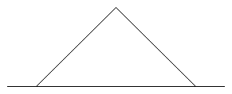 |
| 4 | 1.299 | EF | 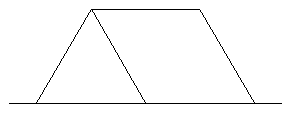 |
| 5 | 1.732 | CW, DL | 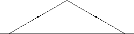 |
| 6 | 2.414 | EF, CP, DL | 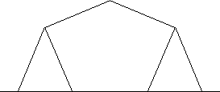 |
| 7 | 3.148 | EF, JD, CP, DL, GS | 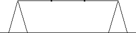 |
| 8 | 4.116 | ||
| 9 | 5.095 | ||
| 10 | 6.080 | ||
| 11 | 7.069 | ||
| 12 | 8.096 | CP | 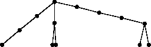 |
| 13 | 9.628 | ||
| 14 | 11.148 | ||
| 15 | 12.661 | ||
| 16 | 14.171 | ||
| 17 | 15.679 | ||
| 18 | 17.184 | ||
| 19 | 18.689 | ||
| 20 | 20.472 | EF, CP, BF | 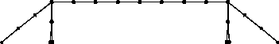 |
| 21 | 22.472 | ||
| 22 | 24.472 | ||
| 23 | 26.472 | ||
| 24 | 28.472 | ||
| 25 | 30.472 | ||
| 26 | 32.472 | ||
| 27 | 34.472 | ||
| 28 | 36.518 | BJ | 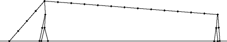 |
| 29 | 39.016 | ||
| 30 | 41.513 | ||
| 31 | 44.011 | ||
| 32 | 46.509 | ||
| 33 | 49.007 | ||
| 34 | 51.505 | ||
| 35 | 54.004 | ||
| 36 | 56.502 | ||
| 37 | 59.084 | GS | 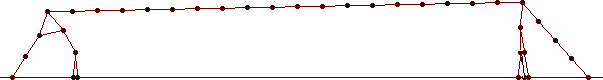 |
| 38 | 61.937 | BF, CP | 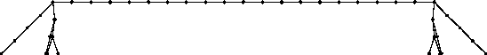 |
| 39 | 64.937 | ||
| 40 | 67.937 | ||
| 41 | 70.937 | ||
| 42 | 73.937 | ||
| 43 | 76.937 | ||
| 44 | 79.937 | ||
| 45 | 82.937 | ||
| 46 | 85.937 | ||
| 47 | 88.937 | ||
| 48 | 91.937 | ||
| 49 | 94.937 | ||
| 50 | 97.937 |
Here are the best areas that people managed to contain with 40 rigid segments:
| Name | Best Area |
|---|---|
| Bertram Felgenhauer | 67.93 |
| Brian J | 67.93 |
| Dan Dima | 67.93 |
| Dave Langers | 67.93 |
| Corey Plover | 67.93 |
| Guenter Stertenbrink | 67.54 |
| Emilio Schiavi | 63.91 |
| Erich Friedman | 63.80 |
| Andrew Bayly | 63.80 |
| David Cantrell | 63.74 |
| Gary Gerken | 58.80 |
| George Sicherman | 56.14 |
| Joseph DeVincentis | 53.68 |
The best rigid tent for n=40 is the last picture shown above. Bertram Felgenhauer wins the $10 prize. Here are some of the other solutions I received:
| 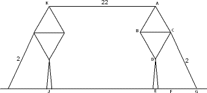 | 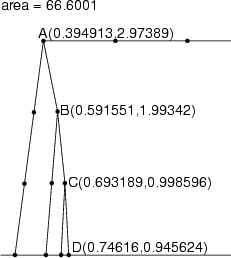 |  |